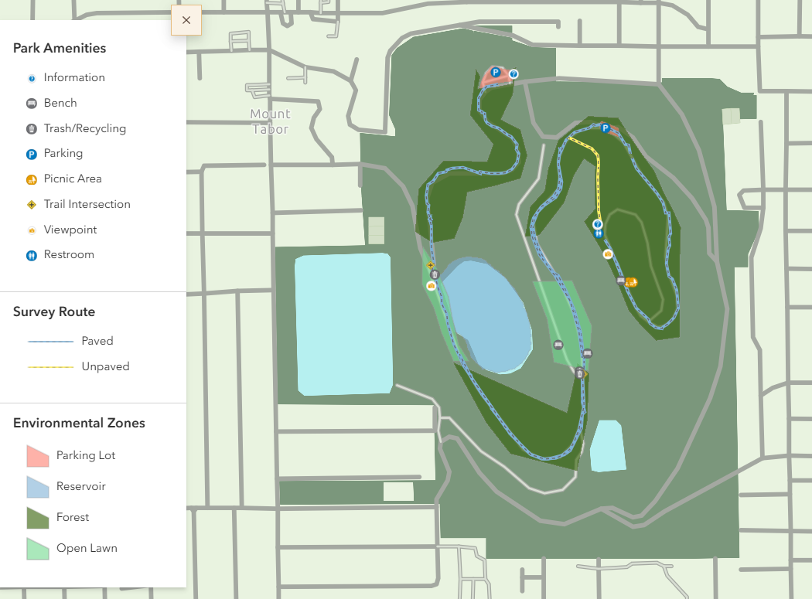
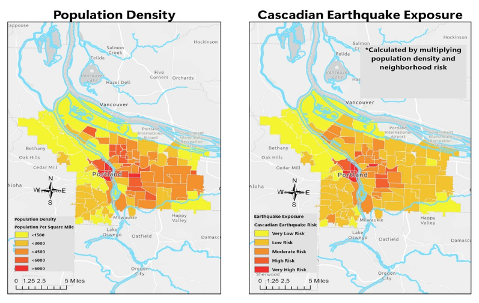
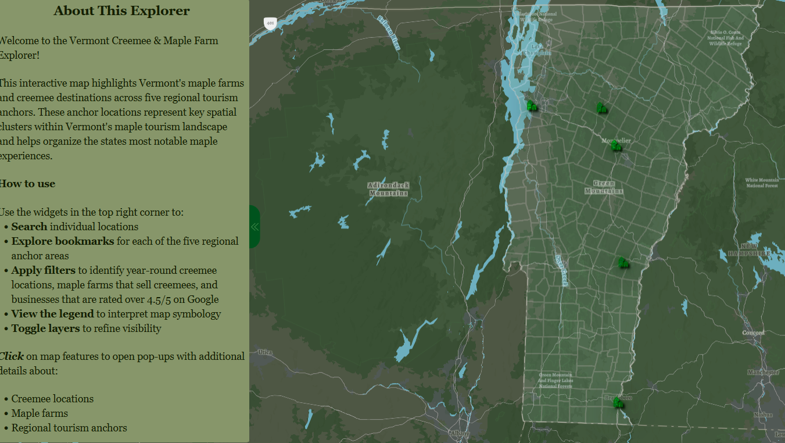
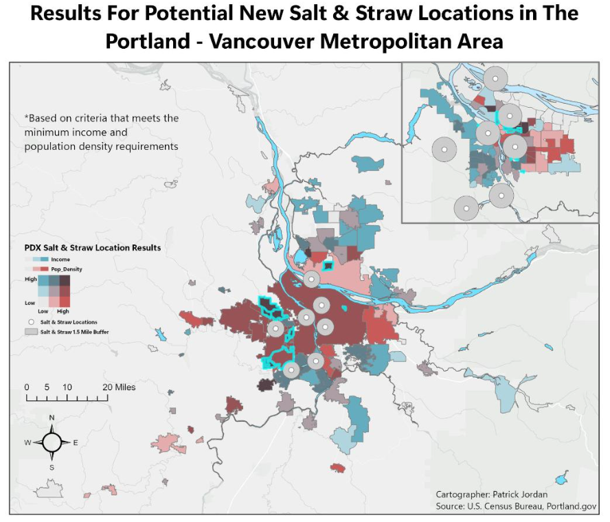

GIS student and emerging geospatial professional with hands-on experience in spatial analysis, cartography, web mapping, GPS/GNSS field data collection, and ArcGIS workflows.
Selected projects demonstrating experience with spatial analysis, cartographic design, field data collection, geographic visualization, and location-based analysis.

A field-based assessment examining smartphone GPS accuracy across varying environmental conditions at Mt. Tabor Park in Portland, Oregon.
View project →
A spatial analysis examining earthquake exposure and potential risk across the Portland metropolitan area.
View project →
An interactive cartographic project exploring Vermont's maple landscape through thematic mapping and geographic visualization.
View project →
A GIS-based analysis evaluating potential locations for a new Salt & Straw store in the Portland–Vancouver metropolitan area.
View project →Tools and methods developed through GIS coursework and project-based experience.
I am completing a Geospatial Information Systems certificate at Portland Community College and building a career in GIS and the geospatial field.
My GIS coursework and projects have given me hands-on experience with spatial analysis, cartographic design, field data collection, GPS/GNSS, web mapping, and ArcGIS workflows. I enjoy using geographic data to investigate real-world questions and communicate spatial patterns clearly through maps and visualizations.
Before transitioning into GIS, I worked in professional culinary operations. That experience developed strong skills in organization, problem-solving, quality control, communication, and working effectively in demanding environments — skills I now bring to my work in GIS.